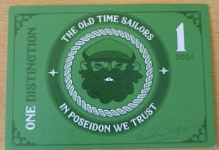
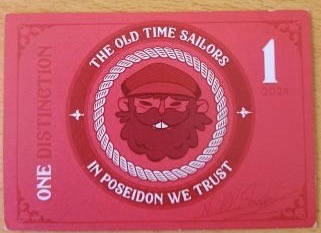
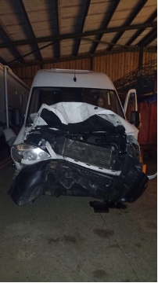

Key Allegations
- Non-payment of Wages:
Most of the 2024 band members and crew were unpaid or grossly underpaid, despite promises and contractual expectations. - Manipulative Control Tactics:
Band members were allegedly isolated at a farm in Devon with limited freedom of movement. Leaving the project without personal funds was nearly impossible. - Tax and VAT Avoidance :
Defrauding the UK tax office. Revenue earnings through ticket and merchandise sales of just under £1M were never declared to HMRC or through the Old Time Sailors company accounts. - Breaking UK employment laws :
Mr Guzman knowingly ran a UK based company without the required working visa or right to work in the UK. Deceiving band members by not adhering to UK employment laws. - Deceiving Companies House:
Old Time Salors Ltd have not had a UK company registered address in the UK since 2022. This was confirmed by Jon Servaes. - Surveillance and Punishment:
Members who voiced concerns were secretly recorded and punished through group isolation, fines, or ejection from the tour. - "Monopoly Money" System:
Mr. Guzman reportedly implemented a fake token economy, where members could earn or lose tokens based on behaviour. Real money penalties were imposed if one went into “negative balance.” - Abandonment and Retaliation:
Multiple members were expelled from the tour in the middle of the night without money or personal belongings—sometimes with passports being witheld until they submitted to his threats. - Work Without Legal Status:
It is alleged that most performers were told to claim they were “on vacation” to circumvent work visa laws. However, working 90+ hours a week for months without pay is not a “holiday.” - Overworked and Unsafe Driving Conditions:
Some band members, also serving as drivers, operated vehicles with dangerously little rest—leading to at least one documented accident. A second accident has taken place in 2025. - Harassment and Coercion:
Those who attempted to leave were intimidated, pressured to surrender intellectual property, or shunned by other members under threat of punishment. Band members who remained were made to sign documents under coersion, with threats of abandoment or non payment if they didn't sign. - Being economic with the truth:
Certain administators of the Old Time Sailors events webpage and Facebook fan page are not listing all of their events. Why would they do that?For example; May 18th - O2 Academy - Liverpool. May 21st - O2 Academy - Birmingham.
No mention in their event lists of The Cornishman Arms in Crantock on the 19th May or Wax Watergate Bay on the 20th May!
Could the reason for this latest accident in Tavistock be bacause the band was playing until 10:00pm at The Berkeley Arms in Wymondham where they would have to load the vans after the gig, then drive through the night back to Gulworthy so that they could perform again that SAME day at the Cornishman Arms? These core members seem to have no regard to the safety or lives of the band members or indeed, any other UK road user!
Real Stories from Former Band Members
Several individuals have come forward with disturbing accounts, including:
- A photographer who was denied pay, coerced into handing over his content, and left stranded.
- Two musicians, Emanuel Vazquez and Franco Galante, allegedly abandoned at service stations after minor infractions.
- Amy Harrison, the only British member, who left due to the mistreatment she witnessed and experienced herself.
These are not isolated cases. Patterns of abuse, exploitation, and fear-based control are repeatedly described by those who participated in the 2024 tour.
Financial Viability: A Questionable Enterprise
Let’s break down the approximate costs and earnings of the tour:
- Estimated minimum wage costs for all staff (if legal wages were paid): ~£480,000
- Basic transport and fuel costs (conservative estimate): ~£60,000
- Estimated income from 228 shows (tickets + merch): ~£284,000
Of course, Mr Guzmán has expenses to pay out i.e. Hire of 2 band transporter vans for 6 months, 2 equipment vans, road tax, insurance and MOT’s for his American Winnebago motorhome, Porsche Boxter, BMW Z3 sportster, touring van, removal van, American Damon Daybreak motorhome and canteen / mobile bedroom lorry. Fuel costs for each vehicle. Cost of 3 mobile homes to house the 25 band members plus the rent of the farm space and food costs, UK VAT and Income Tax.
Conclusion: The band, if operated legally and ethically, would not be financially viable. Cutting costs by not paying workers appears to be the method by which Mr. Guzmán maintains operations.
Information regarding allegation item 4 above.
These are pictures of the Monopoly style money tokens that Mr Guzmán used during the 2024 tour. These were used as a controlling method for members of the band to gain favour with Mr Guzmán. The band was split in to Red, Blue, Green and Yellow houses (Harry Potter Style) so that they could compete against each other.




A few months into the tour Mr Guzman initiated a points system, with ‘distinctions’. These were fake printed money with a cartoon of the captain's face and the words ‘Old Time Sailors’ and ‘In Poseidon We Trust’ printed on them, along with Mr Guzmán’s character signature. The band was split into 4 teams, and the premise of this was the team with the most points at the end of the tour would receive a prize. Please note the winning team was the team conveniently with the most core members in it, and it was only the core members from that team that appeared to get prizes.
You would earn positive points for doing good, and negative points for doing bad. The distinctions earn could be used to buy the drinks (beer, cider or Coca Cola) that the venues would give to the band members for free.
They were no longer allowed to consume these at the gigs but would have to wait until they returned back to the base to ask to ‘buy’ them, if they had enough points. The distinctions could also be used to buy things such as large bottles of coca-cola, £1 mini pizzas, and more depending depending on how many points you had.
Now you would think they would earn points for efforts such as doing well on stage, selling a lot of merch, doing something kind for another band member. Alas no, points barely ever got given out for such things. Points would be awarded to the band member who took a photo or video of another member having done things such as not having cleaned up properly or not having turned up to the van in time.
One time this was the case as 1 member was carrying drinks for the band from the changing area to the van and they had fallen, so another member came over to help him resulting in them being 1 minute late. Despite this the pair of them still received negative points whilst the member who took the video showing they weren’t there was awarded the positive points. There was also the issue that those Mr Guzmán favoured (coincidently mainly the core group) would receive the most positive points whilst those he took issue with received most negative points. Allegedly and according to what we have seen, the most points would be received if someone told Mr Guzmán that another band member was speaking badly about the band or most importantly, him.
Information regarding allegation item 5 above.
Next is the matter of those who left before the tour finished.
On the 21st July at the XChurch Music Festival, the first member to leave was one of the photographers. He had been informed by Mr Guzmán a couple of months into the tour that he would not be getting paid for his work as initially agreed as Mr Guzmán was allegedly unsatisfied with his work, despite the fact he had seen the quality of the photographers work and he had been working like the others non-stop every day. From this moment the photographer received grief from certain core members, causing him a great deal of stress and anxiety.
The day he decided to leave he had secretly packed his bags in the middle of the night and hid them in the back of the van that he travelled in. Once arriving at the festival that the band were playing at, he informed some of the core members that he would be leaving and that he had his bags with him. These core members proceeded to take him to one side to talk to him and try and persuade him to return to the base to talk to Mr Guzmán, which he didn’t want to do because of the trauma he had already endured, he just wanted to leave. Whilst this was happening the other core members took his belongings and locked them in the van they travelled in. They refused to return his belongings to him, which included his passport, until he had copied all video and photo content over to them and wiped it from his computer.
This was on the orders of Mr Guzmán. Mr Guzmán’s argument was the photos belonged to him as the photographer had signed a contract. Once again this is a contract that he wouldn’t have received a copy of, and he never actually signed anything. However, using threats of suing and imprisonment the photographer ended up not calling the UK police which is what he wanted to do and agreed reluctantly to hand over his footage. He was then allowed to leave where he struggled to keep himself safe until his flight home. He has lost all his life savings, and is psychologically affected from the abuse he received. None of the band members were allowed to reach out to him to check if he was okay, because those who leave are shunned and it is prohibited to speak to them. The fear of getting caught was too much for them to risk it.
On the 12th August 2024, upon returning to the Devon base from DevaFest in Cholmondeley Castle in Cheshire, the second member of the band, Emanuel Vazquez was left at Bristol Welcome Break services at approximately 3am in the middle of the night with no money or personal possessions. It’s alleged this was on the orders of Mr Guzmán. His crime? He said something derogatory (a quote from the Simpsons, in fact) in jest about Mr Guzmán in the van which was secretly being recorded by one of the band members and reported to Mr Guzman. Why was this private conversation secretly recorded? Because of the points system that had been put in place.
On 12th August 2024, after arriving back at the Devon base at 7am from Devafest, the third member of the band, Franco Galante was asked to leave the band and travel in the van with some of the core members where he was dropped off at a motorway service station and left there for several hours, again without any money until someone returned and then took him to Exeter Train Station. He was abandoned here without any money or means to travel or pay for accommodation all with the full knowledge of Mr Guzmán and the other core members of this band! His crime....he had sniggered at Mr Vazquez's comment whilst they were in the van together the previous day.
On 13th August 2024, the only British band member, Amy Harrison, left the band. The actions of what Mr Guzmán had done being the final straw. She had been in great distress with how these band members had been treated, along with the mistreatment she had endured over the months, and had been speaking to friends and family for a while about leaving, especially as efforts were being made by Mr Guzmán to isolate her from them. As the band members were prohibited from contacting or helping these 2 band members who had been kicked out and left she was in a highly stressful situation, as she was aware they had nowhere to go, no money and knew no one who could help house them. Though it went against the rules she contacted friends and family secretly to coordinate somewhere safe for the both of them, which caused further stress that was visible to the core members which worried them, as god forbid the venue audiences might have seen her distress. Her punishment for being visibly upset and having a panic attack? Getting shouted at and filmed by Ms Katie Richards for not being able to hide her distress well enough in front of the public. She was able to leave and get back to family but is still suffering with PTSD from the treatment she received from Mr Guzmán and Ms Richards.
Information regarding allegation item 7 above.
These very disturbing pictures below were taken after an accident on the 24th August whilst travelling to a venue where they were due to perform. The driver was enroute from their base at Hurlditch Horn farm, to a farm along the lane towards Morwellham Quay having had only a few hours sleep. None of the occupants of the van at the time of the accident were taken to hospital to be checked for injuries. Each year since 2021 those who drive the vans have reported that they have fallen asleep at the wheel at some point due to lack of sleep. Mr Guzmán is aware of this but is still willing to make his workers drive in these conditions and put them and the general public in danger if it means they get their gigs every day.

